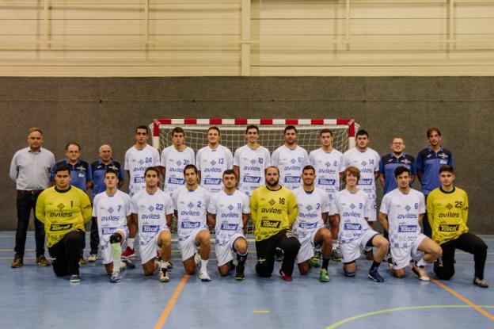

Antes del partido los jugadores del GD Bosco, nuestra cantera, saltaron a la pista para hacerse una foto con los jugadores de la primera plantilla del Cafés Toscaf Atlética
Se planteaba un partido complicado de inicio ante las bajas del cafés Toscaf, la ausencia de Aitor y de Pablo, además de contar con “jugadores tocados”, encendía las alarmas en el calentamiento. Arrancó el partido con igualdad en el marcador, hasta mediada la primera parte, cuando Cafés Toscaf “ajusto la defensa” lo que propicio llegar al descanso con 14-10 favorable a los de casa. La salida de la segunda parte no cambio el panorama, con un Coke inconmensurable en la portería y Silvino muy acertado en ataque, llegando a disponer de 7 goles de ventaja. Gijón Jovellanos intento rehacerse, poniéndose a 3 goles, pero de nuevo una defensa agresiva que forzaba los errores atacantes y el acierto en ataque hizo que Cafés Toscaf llegase a tener hasta 11 goles de ventaja, finalizando con 31-22 en el marcador que deja muestra de la superioridad que hoy demostró el equipo. Destacar la vuelta de Diego Canal a La Magdalena, esta vez con la camiseta de Gijón. Casi 800 espectadores en la grada con presencia numerosa de seguidores de Gijón. Próximo partido, sábado 2 de Noviembre a las 18:00 en La Robla frente a Ezequiel 4 Valles La Robla